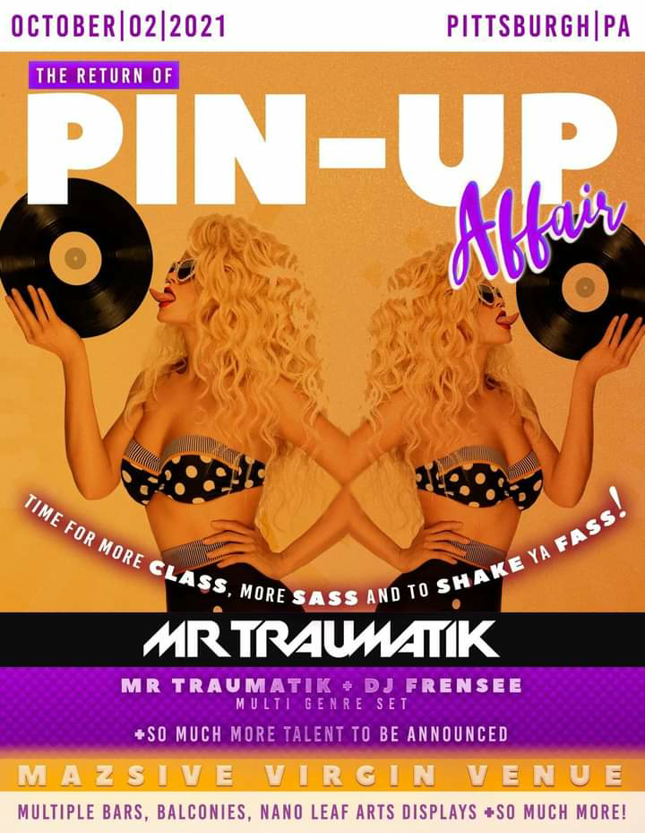

Pin-Up Affair 7

-
Presales on sale now! Click here!
- Saturday, October 16th, 2021 at 9PM EST – 5AM EST
- 600 Freeport Rd, New Kensington, PA 15068
- Duration: 8 hr
- Event brought to you by Smith Agency Events
THE RETURN OF MORE BASS, MORE CLASS, & MORE SASS. NEW BEAUTIFUL MASSIVE VIRGIN VENUE WITH MULTIPLE BARS, FULL NANO LEAF ART, ALL NIGHT PAINTBALL AND MORE.
VIP packages available include: Valet parking, no line, private bar, personal green room, artist meet and greet, balcony access for main stage, drink tickets, and more!
CASH PRIZE $500 for best Pinup Guy or Gal. Make sure you come in costume!
FEATURING:
SPECIAL SURPRISE HEADLINER: Not to be announced at all. 😱 If you wanna see who it is, you have to come to the event! This year features our biggest surprise headliner yet!!!!!
MR TRAUMATIK: Welsh rapper known for his albums Post Traumatik Stress Disorder, Don't Judge a CD by Its Cover, and his Traumatised Volumes. His songs often have a psychedelic theme to them. He released his first EP, Neo & Rebirth, in 2010. He built a fan base through social media, accumulating more than 35,000 followers on Sound Cloud.He also has more than 80,000 followers on Instagram and 100,000 subscribers on YouTube. He won an award for Best Breakthrough MC in 2015.
WICK-IT THE INSTIGATOR:
Wick-it the Instigator is a multi-genre DJ and producer known as a breath of fresh air in an otherwise over-crowded EDM scene. He merges the likes of mashups, hip-hop and electronic to bring together a unique sound that you are bound to enjoy. In the last few years Wick-it has had the opportunity to play festivals like Summer Camp, Wakarusa, Camp Bisco, Imagine, Backwoods, Shambala and more. His SoundCloud page alone has garnered over 70K+ followers and over 30M+ plays. Impressive numbers like these helped land him on Billboard’s Next Big Sound chart. This isn’t just a testament to his top-notch production skills, but also his keen ability to build and harness a highly interactive online fan base.
In 2012, Microsoft recognized that direct audience connection and chose Wick-it to produce a song for their Windows 8/Angry Birds: Star Wars commercial that they blasted to millions of prime-time viewers. Even before that in 2010, Big Boi of Outkast picked up his mashup project ‘The Brothers Of Chico Dusty’ which helped projectile his popularity. To add even more fuel to the fire, in 2015 Sia picked Wick-it’s remix to be her official remix for ‘Elastic Heart’. Since then he has done official remixes for the likes of Kesha, ZZ Ward, KC & The Sunshine Band and Figure.
With successful headline tours supplemented by huge sets playing with Skrillex, Pretty Lights, GRiZ, Herobust and others, it’s obvious his talent and success extend far beyond the studio.
FESTIVILLAINZ: Hailing from New York and Ottawa, In a few short years, Festivillainz have established themselves as one of the hardest hitting duo’s in the rising bass scene. Their signature sound bridges the gaps between Dubstep, Trap, Heavy Metal and Hardstyle, leaving them with a unique energy that perfectly captures their “Villain” persona. Over the years the boys have made a name for themselves with their blistering productions and ultra hype stage presence, by playing main stage at Valhalla, night clubs in Paris and Headlining in cities like Calgary, Montreal and Daytona Beach. The Villainz know exactly how to work a crowd into a frenzy and leave them wanting more. With big things in the works for 2021, Festivillainz is primed and ready to unleash their unique brand of bass in a city near you.
JEN MAS: Jen Mas has been an integral part of the New York Underground since the 90s. She’s known for playing Hardcore/Gabber but can throw down a proper set of any genre from House and Techno to Drum & Bass and Old School. Starting out as a promoter and then shortly after a DJ, she's maintained a strong rave scene presence with her multitude of parties and gigs across the continent. She produced her first event in 1997 at the Roxy Nightclub in New York City, and dozens of more paid and free events for years to follow. She formed the Vitus Crew in 1999 with some of her closest friends and amazing hometown heroes who shared her passion for the underground scene. She has enjoyed traveling to many faraway places to share her unique Hardcore music style and has helped spread the love of the music in a region where it's remained far from the mainstream. Jen has made her mark worldwide, including winning the Iron DJ competition in 2004, ranking top 20 in the Shejay Top 100 International Female DJs poll in 2006, and top 10 in Europe’s Core Magazine female artist poll in 2007. Known for her creative mixing, genre blending, scratching, and energetic stage presence, she's achieved trail-blazing success and continues to open minds at every performance. Her vast musical interests and broad spectrum of taste are the driving forces behind her DJ approach, making every set fun and unpredictable. She'll mix the best tracks from yesterday and today along with original edits, refixes, and productions. She's produced several unreleased Hardcore tracks with good friend DJ How Hard, one was featured on a worldwide charity compilation on Hardcodelia Records in 2020. In 2021, Jen relaunched Vitus to showcase her family of talented musicians and artists via livestream and in-person events. Her goal has always been to share positive energy with others through music, good vibes, camaraderie, and sisterhood. Music is a universal language that will always bring people together, which we need now more than ever!
DJ VENOM: DJ Venom (Morlock Musik, Providence, RI) DJ VENOM: Few DJs put as much energy, intensity and insanity into their sets as Venom. Coming at you with headbanging sounds and sick scratching skills, this rave veteran fills the dancefloors with stomping feet and hardcore beats. Venom first gained noteriety in the early 90s, releasing countless mixtapes and showing off his award winning turntable skills at events all over the country. He won the New England DJ Spin-Off in 1997 and placed 2nd two years in a row at the WMC DJ Battles. In 2000, he signed with the legendary Chicago hard house label Underground Construction and released a number of top selling CDs such as the House Blend, Straight Bangin' and Raise the Volume series. Since 2011, Venom has been championing the sounds of the hard dance movemnet with his monthly War Journal podcast. After 2 decades of DJing, Venom still keeps a busy tour schedule bringing his relentless performances to the underground warehouse parties of the East Coast to the bright stages of EDC Vegas. Venom's full length album Civil Unrest is due out in 2020 as well as slew of singles and remixes slated for release on a variety of labels including his own Morlock Musik. So get ready for the mayhem. Get ready for the chaos. Get ready for DJ Venom